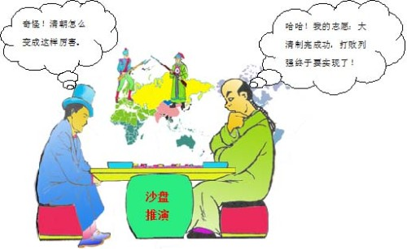

志未酬 作者：梁启超 江銘輝 五夢網
注：这首诗作于光绪27(公元1901)年，发表在《清议报》。叙述作者在戊戌政变失败后，仍要继续奋斗的积极进取精神。由于作法打破传统形式、格调，成为一种“新体诗”

志未酬（江铭辉译文）
壮志尚未实现！壮志尚未实现！请问你的志向什么时候能够实现？志向是没法度量的，实现它也是没有期限的。世界的进步没有停止的时候，我的希望也是没有终止的期限。世人的愁苦烦恼不断像许多混乱的细丝纠缠在一起，我悲天悯人的感情也像乱丝一般，不断涌出。登上一座高山又发现有另外的高山，走出无边的大海又有一片更广大的海。任凭龙腾虎跃测量这一百年的历史，能够成功的英雄又有多少呢？虽然只是少许成就，但亦不敢妄自菲薄。因为没有少量的积累，哪来生出大的成就？只是希望前面的路途宽广至无穷尽，又有谁不受我的情怀感动呢？啊呀，男儿的志是作天下大事，但只有前进不许后退，如果说志向已实现则就不再有志向了。
原文：
志未酬，志未酬，问君之志几时酬？志亦无尽量，酬亦无尽时。世界进步靡有止期，吾之希望亦靡有止期。众生苦恼不断如乱丝，吾之悲悯亦不断如乱丝。登高山复有高山，出瀛海更有瀛海。任龙腾虎跃以度此百年兮，所成就其能几许！虽成少许，不敢自轻。不有少许兮，多许奚自生？但望前途之宏廓而寥远兮，其孰能无感于余情？吁嗟乎，男儿志兮天下事，但有进兮不有止，言志已酬便无志。
作者：梁启超
梁启超（1873年2月23日－1929年1月19日），字卓如、任甫，号任公、饮冰子，别署饮冰室主人，广东新会人，中国近代思想家、政治活动家、学者、政治评论家、戊戌变法领袖之一、清华大学国学院四大导师之一（其余三人为王国维、陈寅恪、赵元任）。
梁启超早年曾应科举，中举人。18岁后，开始接触西学，并经同学陈千秋介绍，拜康有为为师，深受其影响。1894年随康入京会试，为戊戌维新变法的主要领导人之一。1896年春奉康有为征召，赴上海筹办《时务报》，任总撰述。以近两年时间为《时务报》、《知新报》等撰写了五十多篇文章，宣传维新变法理论。 1897年到湖南长沙任时务学堂中文总教习。1898年入京，与康有为等推行变法。联合一百余位举人上书，废除八股取士的制度，推行经济六科，以育人材，而御外侮。“维新变法”开始，应光绪帝召见，命草拟《变法通议》， 试赐六品头衔，办理京师大学堂译书局事务。变法期间为推行新政奔走策划，宣传鼓动，竭尽全力。 戊戌变法失败后，流亡日本，后远游美、澳，至辛亥革命后才回国。在日本时创办《清议报》、《新民丛报》，在东京办大同学校，在神户办同文学校。在宣传西学方面起了思想肩蒙作用。1905年后坚持立宪保皇，政治上日趋保守落伍。1920 年后，专门从事讲学和著述。任清华研究院导师，并兼任南开等几所大学教授。所著《清代学术概论》、《中国近三百年学术史》、《中国历史研究法》等名著在此期间问世。在大学讲学时，传播资产阶级的哲学、历史等人文科学的理论，以及治学方法论，培养了一批在社会上享有盛名的学者，并在中国古代文化遗产的研究和整理上作出了成绩。 其教育主张主要有： （1）教育救国。认为国家的强弱以教育为转移，“变法之本在育人才，人才之兴，在开学校”。并注意到教育应着重提高国民的素质。（2）变科举、兴学校。认为：“八股取士，为中国锢蔽文明之一大根源，行之千年，使学者坠聪塞明，不识古今，不知五洲，其弊皆由于此”。中国欲求富强，进行改革，其根本之途在于从实行资本主义的教育制度入手。他依据儿童身心发展的状况，设计了国民教育制度体系、在“兴学校”的主张中，特别重视“政治学院”、“师范学校”和“女子学堂”的开设。（3）改革课程内容。认为学校应设西学，包括西政、西艺、西文。在西政与西艺之间，又要本着先政（资产阶级的社会政治学说）后艺（科学与技术），以政为本，以艺为用的原则。他在《西学书目表》中详述具体西学内容。（4）改良教学法。认为旧的教学法“导之个以其道，抚之不以其术”，必须彻底改革。对西方的优秀教学法作了比较详细的介绍。 其著作合编为《饮冰室合集》。